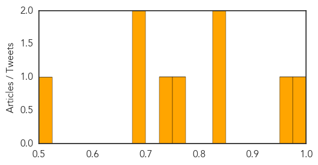
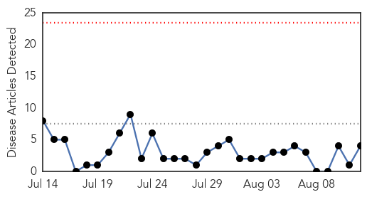
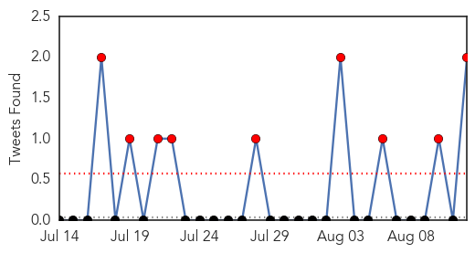
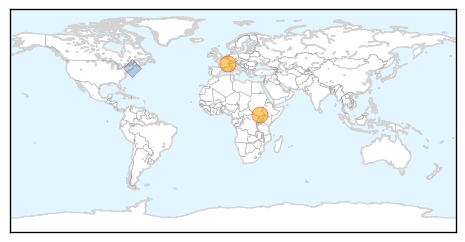

Dengue Fever
30-Day Web Trend
0 alerts, 0 warnings

30-Day Twitter Trend
1 alerts, 0 warnings

Article Locations

Article Confidences
Top Articles:
- 0.997
- Record dengue outbreak fans fears in Malaysia
- 0.957
- 3 dengue patients arrive in two Rawalpindi hospitals
- 0.847
- Baguio Midland Courier Website
- 0.833
- Can America cope with a resurgence of tropical disease?
- 0.752
- Company on anti-dengue roadshow - Community
- 0.729
- Dengue rife, malaria spreading in filthy streets of Yemen: charity
- 0.690
- Care home workers face abuse charges if they discuss Coventry council closures …
- 0.689
- Delhi Bans Sale of Aspirin, Ibuprofen Without Prescription
- 0.522
- Dengue rife, malaria spreading in filthy streets of Yemen
Top Tweets:
-
No tweets found for Aug 12, 2015
Cholera
30-Day Web Trend
0 alerts, 0 warnings

30-Day Twitter Trend
9 alerts, 0 warnings

Article Locations
Article Confidences

Top Articles:
- 0.996
- Progress being made to protect children and at-risk populations against cholera in South Sudan
- 0.993
- Progress being made to protect children and at-risk populations against cholera in South Sudan - South Sudan
- 0.990
- Progress being made against cholera in South Sudan: WHO - Xinhua
- 0.986
- Progress being made to protect children and at-risk populations against cholera in South Sudan - WHO
Top Tweets:
- 0.839
- RT: indeed - the cholera epidemic the UN caused in Haiti has killed thousands http://t.co/IMpki5AEeO https://t.co/LTfOlrLjeP
- 0.610
- RT: UNSG announces resignation of SRSG in CAR over sex abuse. But promoted SRSG in Haiti who oversaw cholera outbreak Select…